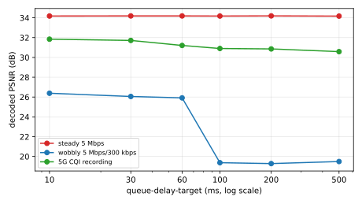
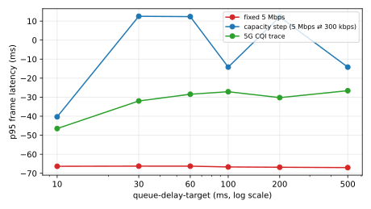

H7 — With the encoder starved, the queue-delay-target knob starts trading picture quality
refutedGoal 2.2 (knob sensitivity), follow-up to H6
Claim
H6 found the queue-delay-target knob moves latency but not picture quality, because the encoder had bytes to spare. With the bitrate ceiling dropped from 4000 to 800 kbps, the encoder is hungry, so loosening the knob should now raise picture quality (PSNR) as well as latency.
Starving the encoder did not turn the knob into a quality knob. At the tight 800 kbps ceiling, loosening the knob does not raise picture quality. On the steady network PSNR is dead flat (34.2 dB at every knob value); on the wobbly network it actually falls as the knob loosens (26.4 dB at 10 ms down to about 19 dB at 100 ms and beyond); on the 5G recording it drifts slightly down (31.8 to 30.6 dB). So the queue-delay-target is a latency knob, not a quality knob, at both the loose (H6) and tight (H7) ceilings for this workload.
The quality numbers are now trustworthy. The decoded_psnr metric was fixed before this run (frame-accurate self-healing alignment), and the values track the bitrate ceiling as they should -- about 32 to 39 dB at the loose 4000 kbps ceiling (H6) versus 19 to 34 dB at the tight 800 kbps ceiling here. The metric clearly separates the two ceilings, which the earlier broken metric (pinned near 10 dB everywhere) could not.
The robust takeaway across H6 and H7 is one finding, tested at two ceilings with a trustworthy quality axis -- the knob moves latency, not quality, and on a wobbly link a looser knob slightly hurts quality rather than helping.
Limitations
Workload-specific (realmotion-avi, 1280x1024 MJPEG, 10 fps, 60 s) and bitrate-specific (the two ceilings tested). A different clip or ceiling could behave differently.
The quality axis is PSNR; SSIM or VMAF might surface a smaller effect PSNR misses.
3 reps per cell; effects smaller than the run-to-run spread are not resolved.
Absolute latency carries the aum/veda clock-skew artifact (as in H4/H6); the comparison across knob values within one sweep is unaffected.
Figures

Decoded PSNR vs queue-delay-target. Flat or falling on every network — loosening the knob does not raise quality.

p95 frame latency vs queue-delay-target. Latency tracks the knob (the relative trend within a sweep is what matters; the absolute offset carries the aum/veda clock-skew artifact).
Tables
Decoded PSNR (dB) by queue-delay-target
network
10 ms
30 ms
60 ms
100 ms
200 ms
500 ms
steady 5 Mbps
34.18
34.19
34.19
34.18
34.19
34.17
wobbly 5 Mbps/300 kbps
26.39
26.06
25.92
19.37
19.28
19.49
5G CQI recording
31.84
31.72
31.21
30.90
30.86
30.59
p95 frame latency (ms) by queue-delay-target
network
10 ms
30 ms
60 ms
100 ms
200 ms
500 ms
steady 5 Mbps
-66.32
-66.24
-66.25
-66.67
-66.83
-67.01
wobbly 5 Mbps/300 kbps
-40.32
12.52
12.34
-14.19
12.22
-14.20
5G CQI recording
-46.49
-31.99
-28.45
-27.13
-30.23
-26.59
Experimental setup
h7-qdt-sweep-static
queue-delay-target sweep on the static network, tight 800 kbps ceiling.